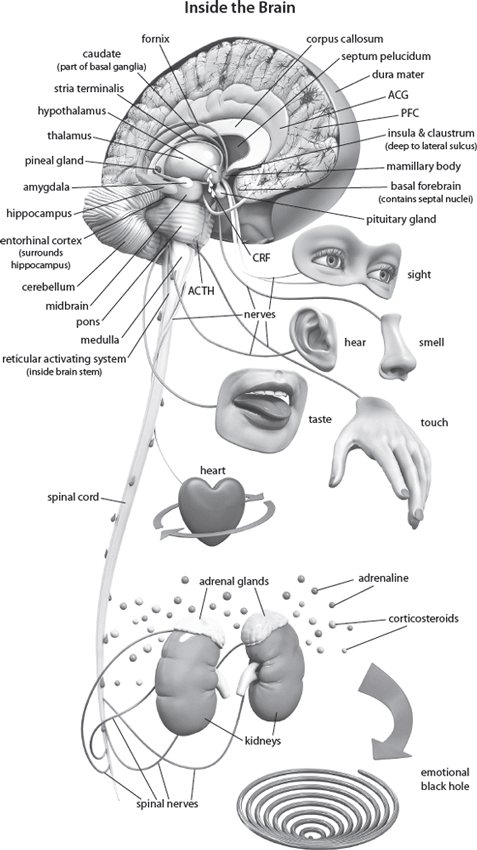
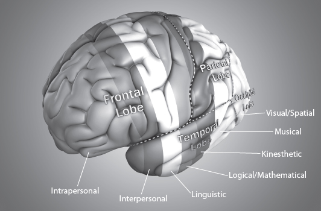

2
Choice and Your Multiple-Perspective Advantage
Main Scripture: Let the peace (soul harmony which comes) from Christ rule (act as umpire continually) in your hearts [deciding and settling with finality all questions that arise in your minds, in that peaceful state] to which as [members of Christ’s] one body you were also called [to live]. And be thankful (appreciative), [giving praise to God always]. Colossians 3:15 AMP
Linked Science Concept: Choice is real, and free will exists. You are able to stand outside of yourself, observe your own thinking, consult with God, and change the negative, toxic thought or grow the healthy, positive thought. When you do this, your brain responds with a positive neurochemical rush and structural changes that will improve your intellect, health, and peace. You will experience soul harmony.
These are obvious statements; however, many of us walk through life as though we are victims of the events and circumstances of life and biology and whatever or whomever else we can think of to blame. As a therapist for nearly twenty-two years and having reached millions of people through my seminars, books, and media appearances, the statements I make more than any others are these: “You are not a victim. You can control your reactions. You do have a choice.”
Free Will Is Not an Illusion
All of us, including God-fearing Christians, fall prey to media proclamations by neuroscientists and researchers who make the news with such leading questions as, “Is free will an illusion?” The problem, however, is that this point of view cannot be reconciled with what we know about the human brain and what Scripture says about us as humans. In a New York Times article, a legal analyst even asked, “Because our brains cause all behavior, could all behavior be potentially excused?”[1]
This is dangerous thinking. They are basically saying that we are not responsible for our actions, which provides an excuse to do whatever we want to do with no consequences.
We must always remember that scientists are not God—though they sometimes act like they are. I am a scientist, and if I can’t back up a scientific “fact” with Scripture, I question its validity.
Philosophers and scientists have long debated whether we have free will. Some argue free will is a quaint, old-fashioned idea. Of course, the mere fact that people debate this issue means they are using their free will to formulate their opinions and choose their answers. So they quite literally destroy their own argument.
A typical neuroscientist might argue that free decisions are determined ahead of time by brain activity. This argument says the brain is like a machine that has all these programs running, over which we have no control. This machine produces the mind, and we go through life helplessly at the will and mercy of these programs. Then neuroscientists use brain imaging and fancy terminology to argue that free will is just an illusion.
We Can Choose to Think the Way God Wants Us to Think
As a communication pathologist specializing in the field of cognitive neuroscience, my research is concerned mainly with how humans think and the impact of this thinking on what they say and do, and I have come to a very different conclusion from those who think free will is just an illusion. I’m convinced beyond all doubt that our God-given ability to think and choose means that our free will influences our thinking, which produces our state of mind. This is so important to human behavior and potential that I have dedicated my life to understanding the process of thought and how we can choose to think the way God wants us to think. Far from explaining away free will, the neuroscientific evidence actually explains how free will works.
Molecular biologist Francis Crick, who won a Nobel Prize in 1962 with James Watson for their discovery of DNA in 1953, said free will is “a simple-minded bit of confabulation” and dismissed it as “an exercise in self-delusion.”[2] In making this statement, Crick overlooked something important: He chose with his free will to formulate that thought and express it.
Proving Free Will
Brain activity can be identified in the prefrontal cortex (just above the eyebrows) and parietal cortex (top side of your head) seven to ten seconds before an actual decision is verbalized or enacted. Many scientists use this fact to argue that the decision was already encoded.[3] I see it differently, and I am in good company with scientists like Jeffrey Schwartz, Norman Doidge, and others.
My argument is that this brain activity is the processing activity we do unconsciously, on the very real and active nonconscious level (see chap. 8), which is flavored by the thoughts—memories—we have implanted into our nonconscious minds over time. In this phase we choose to add our own unique perception, based on these implanted thoughts that form our point of view, on our way to verbalization or action we perform. So in simple terms, what we say and do is based on what we have already built into our minds. We evaluate this information and make our choices based on this information, then we choose to build a new thought, and this is what drives what we say or do.
This brain activity, seen in brain imaging, is not the result of machine-like activity; it is simply the build-up to the moment of consciousness. It is the activity of a network of neural circuits that begin to prepare for an upcoming decision long before it enters our awareness. It is the intellectualizing that is happening in the nonconscious mind. In other words, “As he thinks in his heart, so is he” (Prov. 23:7). We are not driven by forces beyond our conscious control. We are accountable for every thought and decision we make.[4] We are highly intelligent beings with free will, and we are responsible for our choices.
Some forward-thinking researchers have found that when people doubt free will, they become more dishonest. It is almost as though denying free will provides the ultimate excuse to behave however people want without accountability for their actions.[5]
Other researchers found that believing in free will guides people’s choices toward being more moral and better performers. They go so far as to say that the more researchers investigate free will, the more reasons there are to believe in it, and that to an extent those who believe otherwise delude themselves.
Ecclesiastes 7:29 (NLT) says it like this: “God created people to be virtuous, but they have each turned to follow their own downward path.” A standard definition of free will is a “set of capacities for imagining future courses of action, deliberating about one’s reason for choosing them, planning one’s actions in light of this deliberation and controlling actions in the face of competing desires.”[6] This, I believe, is how we choose to follow either God’s path or Satan’s path.
Science is proving free will right down to the genetic level. Let’s take a look at some of the evidence.
Choice Has Mental Real Estate
Choice has mental “real estate” around the front of the brain. It includes many circuits that start at the basal forebrain (between your eyebrows) and extend back across the frontal lobe, which is capable of an impressive array of functions and is connected to all other parts of the brain. It is also where connections from all the other parts of the brain converge. Specific circuits go to structures like the insula, corpus callosum, anterior and posterior central gyrus, basal ganglia, precuneus, and subgenuel region of the brain.[7] This arrangement enables the frontal lobe to integrate and manage activities in the other parts of the brain.
We Can Observe Our Own Thoughts
One of the most exciting features of frontal lobes is how they enable us in a sense to stand outside ourselves and observe our own thinking. We can observe our thoughts and actions and make decisions about them. Suddenly, biblical principles such as “bringing all thoughts into captivity,” “renewing your mind,” “casting all your cares,” and “being anxious for nothing” become less difficult when we realize God has given us the equipment to do these things.

When we choose life (Deut. 30:19), the diamond increases its shine; when we choose anything other than life, the diamond loses its shine. This is a simple analogy of what happens in the brain. The wrong choices cause brain damage. The right choices enhance brain function.
Our MPA
We have what I like to call “multiple-perspective advantage”—MPA for short. Our unique, multifaceted nature, made in God’s image, allows us to see things from many different angles—like different perspectives. We have the unique opportunity to assess our thoughts and their impact and choose to connect to the vine that is Christ (John 15:1–5)—to restore growth and prune off the branches of toxic thinking.
We are directly responsible for what we choose to think about and dwell on, and we make these decisions in the privacy of our own thinking. As you think, it is important to make a distinction between who you truly are—the real, multifaceted, unique you—and the person you have become through toxic choices. Fortunately, you can see both and choose to reconnect with the vine (John 15) and renew your mind (Rom. 12:2). Your brain will follow the instructions and choices of your mind and change its landscape accordingly. Part 2 of this book will help you do just that.
The Seven Different Types of Thinking

You Are a Thinking Being
Let’s go deeper into the brain to see how influential and real your free will and choices are. You are a thinking being; you think all day long, and you are even thinking while you sleep. Daytime thinking is a building process, whereas nighttime thinking is a sorting process. As you think, you are making your way to a decision of some kind, whether it’s as simple as what to eat or as complex as choosing one of several different courses of action you face.
All Thinking Activity Is Real
All this thinking activity is real, and it can be seen on various types of brain imaging. When we think, marvelous, wondrously complex, and creative things take place. Even if you don’t fully understand what I am saying in the next few paragraphs, be in awe of how intricately God has made us.
Just the mind activity from your reading of the next few lines generates electromagnetic, electrochemical, and quantum action in your neurons. It causes
This combined activity sets up an intricate and organized sequence of actions of neurotransmitters, proteins, and energy that forms a signal. Your thinking has just created a powerful signal that is going to change the landscape of your brain.
You Create Signals
This signal you have just created passes through the membrane of the cell, travels to the cell’s nucleus, and enters the chromosome, activating a strand of DNA. The DNA is zipped up, almost as though it is in a cocoon, until activated or unzipped by the signal. When the DNA is zipped up, it is in a dormant or inert state. This cocoon also protects the DNA from the rest of the intracellular environment while in this inert state.
So, the zipped up DNA has to be opened so that the appropriate genetic code needed to build the protein can be read. As it is opened and the code is read, RNA (a type of protein that almost acts like a photocopier) makes a photocopy of the code, which serves as a guide or architectural plan to build the proteins within the machinery inside the cell. This is called “genetic expression.” And these proteins you have caused to be built hold the information you have just read as a thought or a memory. You have created substance.
Molecules are assembled into protein by the genetic instructions in our DNA. These instructions dictate the anatomy and physiology of our bodies, and we control up to 90 percent of this process through our thinking.
While scientists have brilliantly mapped the whole sequence of gene expression and protein assembly, they have given very little attention to the signals that get the whole thing going in the first place.[8]
The Signal That Unzips DNA
Let’s take a closer look at these signals.
Researchers estimate that about 90 percent of genes in the DNA are working with these signals from these outer and inner environments.[11]
The Switch Gene
One of the many amazing things Kandel discovered was that we have a switch gene called the “creb gene,” which we choose to switch on with our thoughts. So our thoughts are the signal I am talking about in the paragraph above. I wish I could delve further into this fascinating topic, but it is a highly complex process and beyond the purpose of this book, which is not meant to be a scientific tome. However, it is still worth a brief and simple mention because it highlights how God built choice into every sophisticated detail of our being and, once again, gives us the opportunity to admire him.
Here is a simple explanation of this switch gene: As information in the form of electromagnetic and chemical signals moves toward the front part of the brain, it becomes amplified and highly active. This stimulates the release of specialized proteins inside the cell, turning on the creb gene, which acts like a light switch that we choose to switch on or off by our thoughts. This switch creb gene then activates genetic expression (the making of proteins), and we grow protein branches that hold our memories, which can also be called our thoughts.[12] So when we choose to switch on the creb gene because of the thoughts we allow to permeate our brain, protein synthesis happens and a new branch grows and makes a connection at a synapse to other branches.
What Does All This Science Mean to You?
All this scientific and biological information is to say two things:
What Does the Future of Medicine Potentially Hold?
Eric Kandel, the Nobel Prize winner for his research on memory, says the following concerning treating patients in the future: “Social influences will be biologically incorporated into the altered expression of specific genes in specific nerve cells of specific areas of the brain.”[13] So a time is coming when medical practitioners will include admonitions like Philippians 4:8 and Romans 12:2 on their prescription pads. Part 2 of this book is designed to help you apply God’s prescription.
From the Gene Myth to the Truth
We have been living under a myth called the gene myth, which locates the ultimate power over health and mental well-being in the untouchable realm of genes, relegating them to the level of gods. This myth has bound the mental and physical health as well as the peace and happiness of too many people for too long. Almost daily another headline pops up with the highly fashionable concept of a gene for this or a gene for that. You are an alcoholic or depressed or battle with learning disabilities because you have the gene for alcoholism or depression or learning disabilities or whatever. Genes may create an environment within us in which a problem may grow, a predisposition, but they do not produce the problem; we produce it through our choices. Our choices act as the signals that unzip the DNA, which I spoke about earlier in this chapter.
Genes have been made out to be responsible for feelings, spirituality, beliefs—even things like the enjoyment of music—all human behavior, to the extent of determining human affairs, human relationships, and social problems.[14] In fact, genetic predisposition has become entrenched in popular culture to the extent that phrases like “she has good genes” and “he was born that way” are commonplace.
This thinking removes choice and accountability from the equation and is scientifically and spiritually inaccurate. You control your genes; your genes do not control you. Genes may determine physical characteristics but not psychological phenomena. On the contrary, our genes are constantly being remodeled in response to life experiences.[15]
Outstanding research has recently been done by Dr. Gail Ironson, a leading mind-body medicine researcher and professor of psychology and psychiatry at the University of Miami.[16] She found that the most significant factor that made a difference in healing for those with HIV was their choice to believe in a benevolent and loving God, especially if they also chose to have a personal relationship with a benevolent and loving God. Her study ran over four years and her determination of healing was based on the decrease of their viral load, the amount of the AIDS virus in a sample of blood, and the increased concentration of “helper T-cells”—the higher the concentration, the more the body is able to fight disease. She found that those who did not believe God loved them lost helper T-cells three times faster. Their viral load also increased three times faster, and their stress levels were higher, with damaging amounts of cortisol flowing. Dr. Ironson summarizes her research by saying, “If you believe God loves you, it’s an enormously protective factor, even more protective than scoring low for depression or high for optimism. A view of a benevolent God is protective, but scoring high on the personalized statement ‘God loves me’ is even stronger.”[17]
As you can imagine, the implications of this research are enormous, from how we present ourselves to others to how we help others and ourselves manage illness. Our choices have an impact. Our choices become physiology, and what we believe as well as what we believe about ourselves alters the facts.
We are not victims of our biology. We are co-creators of our destiny alongside God. God leads, but we have to choose to let God lead. We have been designed to create thoughts, and from these we live out our lives (Prov. 23:7).
Hebrews 11:1 says, “Faith is the substance of things hoped for, the evidence of things not seen.” Whatever you believe in and hope for becomes substance on a physical level, and you act upon this. This process can move in either direction—negative or positive.
In the next chapter we look more in depth at the impact of our choices and how to eliminate toxic choices.
Chapter 2 Summary